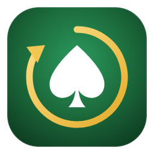

Spin Trainer
Тренажёр префлоп-решений для Spin & Go
⬇ Скачать для Windows
Версия 0.15.0 · 13.11.2026 · Windows 10 и 11 · около 3 МБ
Как установить
- Запустите скачанный файл Spin-Trainer-setup.exe. Права администратора не нужны.
- Windows может показать синее окно «Система Windows защитила ваш компьютер» — программа новая и пока без платной цифровой подписи. Нажмите «Подробнее» → «Выполнить в любом случае».
- Дальше программа обновляется сама: при выходе новой версии вверху появится кнопка «Обновить».
Без установки
Можно пользоваться прямо в браузере: веб-версия. Данные (статистика, свои чарты) хранятся на этом устройстве, перенести их можно через «Резервную копию».